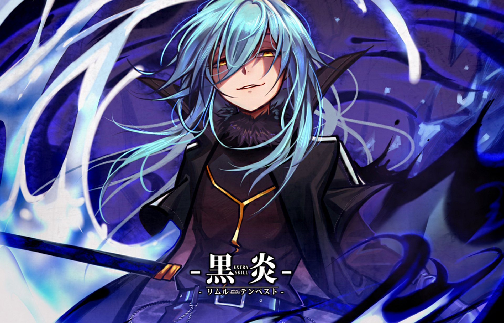

Tensei Shitara Slime Datta Ken
Sinopse: Minami Satoru, funcionário de uma grande coorporação, é assassinado e renasce num mundo paralelo. No entanto, algo está diferente: ele renasceu como um slime. Lá ele faz muitos amigos e com suas novas habilidades ele enfrenta diversas batalhas que o deixam entre a vida e a morte.
Saiba Mais

Numero De Clicks
-
Protagonista
Rimuru Tempest
-
Habilidades
MUITAS HABILIDADES
-
Categorias
Ação, Fantasia, Aventura, Shounen